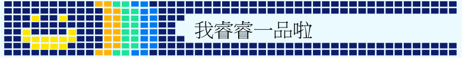

我叫張哲睿
目前就讀高雄市立高雄高級商業職業學校資料處理科二年級，曾就讀市立七賢國中,市立龍華國小及市立裕誠幼稚園。
自小熱愛球類運動，舉凡籃球,桌球,排球等。
在耳濡目染之下接觸電腦相關領域，對電腦的使用已有十一年經驗，能透過簡單指令完成複雜的工作正是它吸引我的原因。 目前已通過電腦軟體應用丙級，現在正學習python程式語言。
夢想是 成為恐龍
© Copyright This website was absolutely made by myself and I want to be a dionsaur.